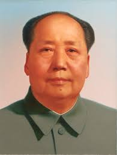

Jusqu’en 1912, la chine est un empire. Mais au 19ème siècle, cet empire va être pris d’assaut par des puissances étrangères (que ce soit françaises, américaines, anglaises ou allemandes) et beaucoup d’étrangers vont chercher à avoir des concessions (territoires qu’ils pourraient exploités). L’empire chinois n’a jamais su bien se défendre. En 1912, une république née. Mais avec cette république, il va y avoir des tensions. Au début des années 1920, un mouvement communiste apparaît qui s’oppose au nationaliste. C’est le chaos en Chine, celle-ci est envahie par le Japon, mais ces derniers repartent en 1945, à la fin de la Seconde Guerre Mondiale. Mais en 1946 commence une grande guerre civile.
Pendant 3 ans, les communistes ont affronté les nationalistes et à partir de 1949, la Chine devient la République Populaire de Chine, tout simplement car le 1er octobre 1949, cette République Populaire de Chine est proclamée à Pékin par Mao Zedong, le leader du parti communiste chinois.
A partir de 1949, l’Empire du milieu devient donc un pays communiste avec Mao à sa tête.
Dès 1949, la Chine se repli et tourne le dos à l’Occident avec pour seul allié l’URSS pendant un temps. Mais cette République Populaire de Chine se présente surtout, dès les années 1950, comme une puissance du Tiers-Monde (ce sont les pays en développement). Celle-ci veut s’imposer sur la scène internationale. Mais elle reste très pauvre et en retard de développement jusque dans les années 1980-1990.
Conscient de son gros retard dans les années 80, la Chine décide de s’ouvrir et de se moderniser.
